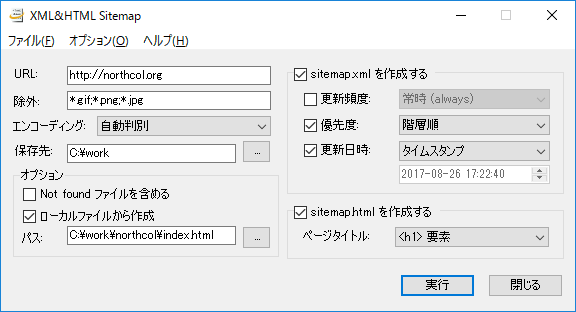

目次
概要
XML&HTML Sitemap は、簡単な操作で XML サイトマップと HTML サイトマップを同時生成できる Windows アプリケーションです。
生成される XML サイトマップ (sitemap.xml) は Sitemaps XML format 規格に準拠しており、 Google ウェブマスターツールなどのサービスにそのまま登録できます。 HTML サイトマップ (sitemap.html) は、自由に改変して、ご自身のウェブサイトで公開することができます。
特徴
- ローカルファイルからのサイトマップ生成が可能
- HTML サイトマップはテンプレートを自由に改変可能
使い方
主な操作は次のメインウィンドウから行います。
基本的な使い方
基本的な使い方は次の通りです。
- [URL] テキストボックスにサイトの URL を指定します。
- [保存先] テキストボックスにサイトマップを保存するフォルダを指定します。
-
次のチェックボックスにチェックを入れます。
- [sitemap.xml を作成する]: XML サイトマップを作成する場合
- [sitemap.html を作成する]: HTML サイトマップを作成する場合
- [実行] ボタンを押すと、サイトマップの生成が実行されます。
ローカルファイルからのサイトマップ生成
[ローカルファイルから作成] チェックボックスをオンにすると、 ローカルファイルからのサイトマップ生成が行われます。 これにより、実際のサイトにアクセスすることなくサイトマップを生成できます。 サイトマップに記載されるアドレスは、ローカルファイルの場所を、 [URL] テキストボックスに指定した URL を基準とするアドレスに読み替えたものとなります。
各項目の詳細
メインウィンドウで設定が可能な項目について詳しく説明します。
基本設定
- [URL]: サイトマップを作成するサイトの URL を指定します。
http(s)://から始めてください。 - [除外]: サイトマップから除外するファイルやディレクトリをパターンで指定します（詳細は後述）。
- [エンコーディング]: サイト上のウェブページのエンコーディングを指定します。
- [保存先]: サイトマップの保存先を指定します。
上述の [除外] テキストボックスに指定するパターンには、ワイルドカードが利用できます。
ワイルドカード * は任意の文字列を、? は任意の文字を表します。
複数のパターンを指定するには、それぞれを ; で区切って記述します。
パターンの例を次に示します。サイト http://example.com に対してサイトマップを生成する場合を説明します。
| パターン | 説明 |
|---|---|
*.gif;*.png;*.jpg | GIF, PNG, JPG ファイルを除外 |
/img/* | http://example.com/img ディレクトリ以下を除外 |
オプション
- [Not found ファイルを含める]: 404 エラーなどでアクセスできなかったファイルもサイトマップに含めます。
- [ローカルファイルから作成]: ローカルファイルを元にサイトマップを生成します。 [パス] テキストボックスに、サイトのホームページに相当するローカルファイルの場所を指定します。
XML サイトマップ
- [更新頻度]: XML サイトマップの
changefreqタグに相当します。 - [優先度]: XML サイトマップの
priorityタグに相当します。 - [更新日時]: XML サイトマップの
lastmodタグに相当します。
HTML サイトマップ
- [ページタイトル]: 各ウェブページのタイトルとして使用する文字列を指定します。
テンプレート
同梱されている template.html ファイルは HTML サイトマップのテンプレートファイルです。
自由に編集して構いません。
テンプレートファイルには、結果を挿入するための特別なタグを記述することができます。 次の表は利用可能なタグの一覧です。
| Tag | Explaiation |
|---|---|
<%sitemap /> | Sitemap |
<%home_title /> | Title of home page |
<%date format="..." /> | Date |
<%time format="..." /> | Time |
<%date>, <%time> タグの format 属性は日付または時刻の書式を指定します。
この書式指定は .NET と同じものです。
詳細は Custom Date and Time Format Strings
をご覧ください。
日付、時刻の書式指定の例をいくつか示します。
| Example | Result |
|---|---|
<%date format="MM-dd-yy" /> | 07-31-99 |
<%date format="MMMM d, yyyy" /> | July 31, 1999 |
<%time format="hh:mm tt" /> | 03:05 PM |
<%time format="HH:mm.ss" /> | 15:05.25 |